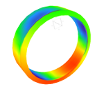
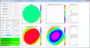
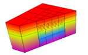

 |
Casing model visualization includes clipping, scaling and deformations. | |
 |
The Inversion Tool plugin calculates reservoir deformation from surface displacement data (e.g. InSAR, optical levelling), providing a fast estimate of reservoir depletion (or inflation) input data for a forward Geomec simulation. | |
 |
Extended refinement options for the hexahedron mesh. | |